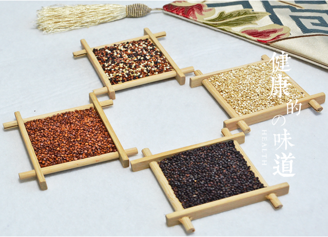

产品追溯源
品种：藜麦
原产地：青海省海西州
藜麦营养价值
藜麦是全谷全营养完全蛋白碱性食物，胚乳占种子的68%, 且具有营养活性，蛋白质含量高达16%-22%,品质与奶粉及肉类相当；富含多种氨基酸，其中有人体所需的全部9种必需氨基酸，尤其富含植物中缺乏的赖氨酸；钙、镁、磷、钾、 铁、锌、硒、锰、铜等矿物质含量高；富含不饱和脂肪酸、类黄酮、B族维生素和维生素E、胆碱、甜菜碱、叶酸、α-亚麻酸、β-葡聚糖等多种有益化合物；膳食纤维素含量高达7.1%,胆固醇为0,不含麸质，低脂低热量低升糖，各项营养几乎都是常见食物里最优秀的。

食用功效
藜麦属易熟易消化食物，口感独特，有淡淡的坚果香，具有均衡补充营养、增强机体功能、调节免疫和内分泌、提高机体应激能力、预防疾病、抗癌、减肥、辅助治疗等功效。适于所有群体食用，尤其适于三高、心脏病等慢性病，以及婴幼儿、孕妈、儿童、学生、老年人等特殊体质和生活不规律人群，长期食用，效果显著。藜麦符合人类对食品安全、健康、营养、天然的需求，已经成为国际上炙手可热的时尚健康食品。